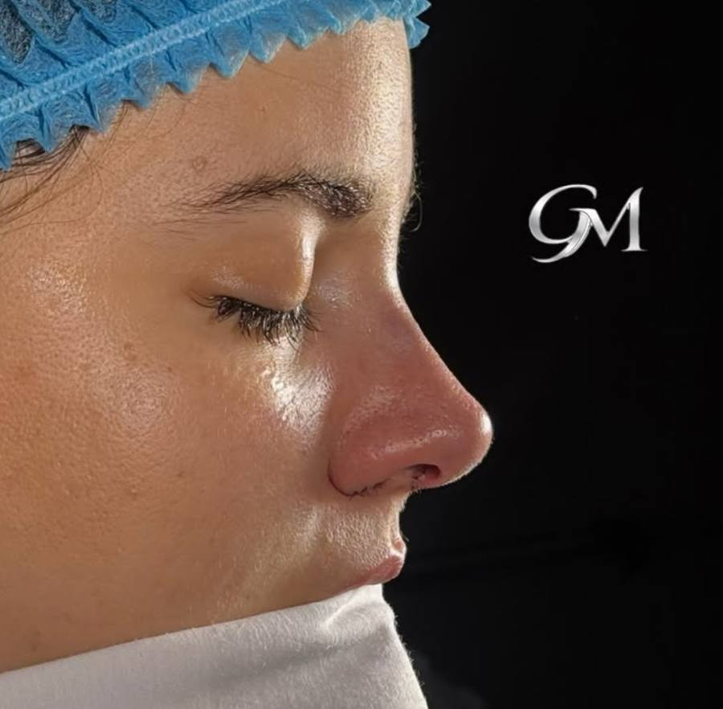
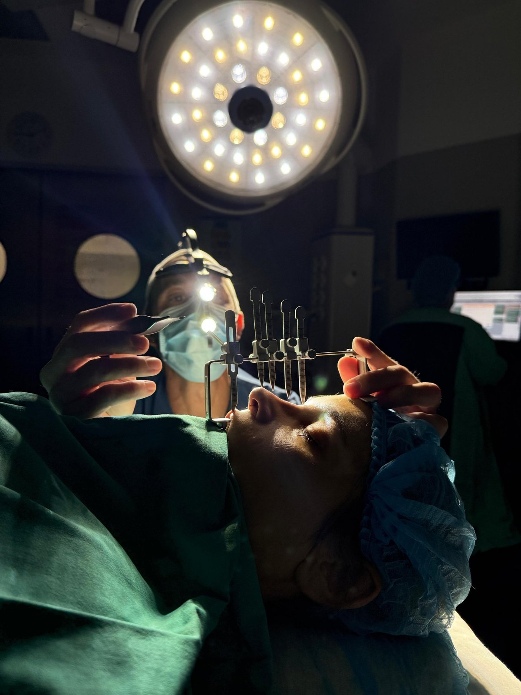
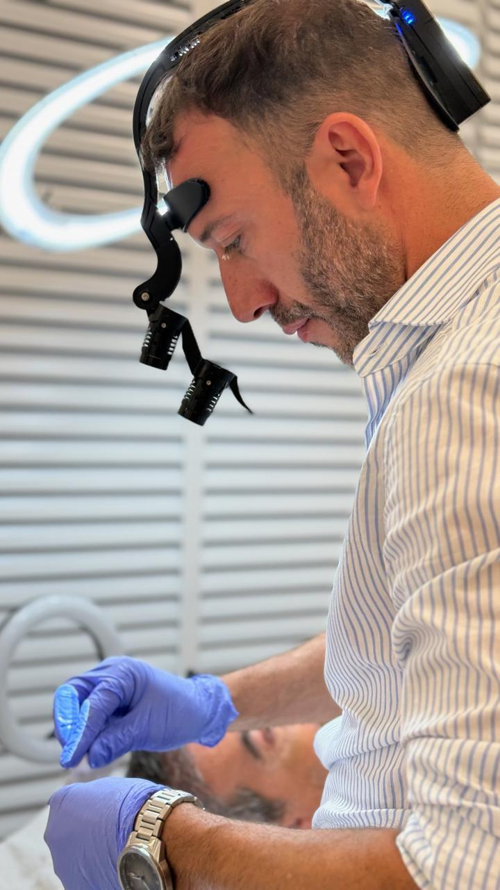
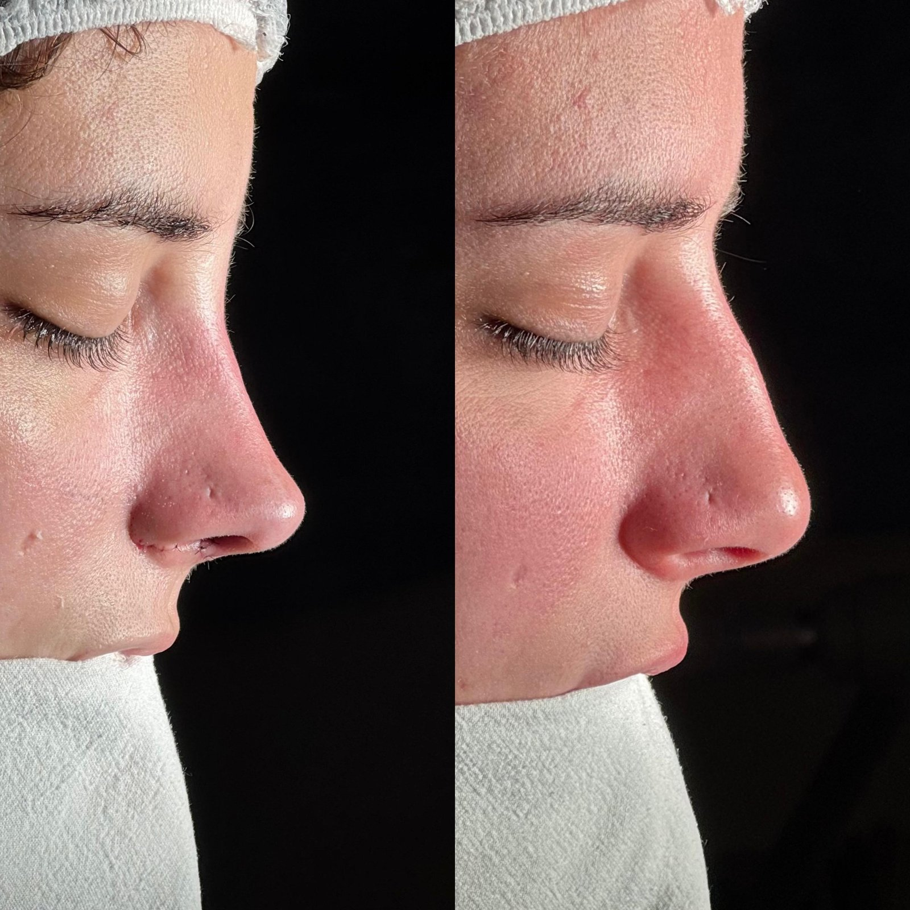
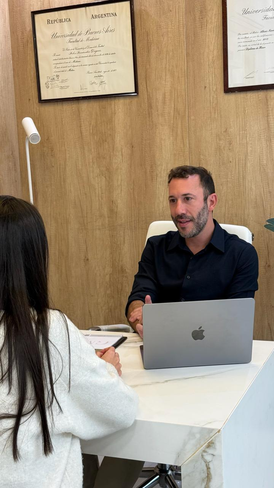
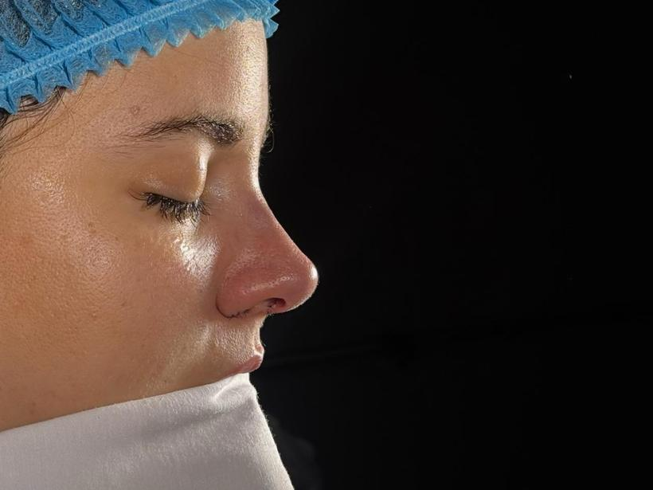
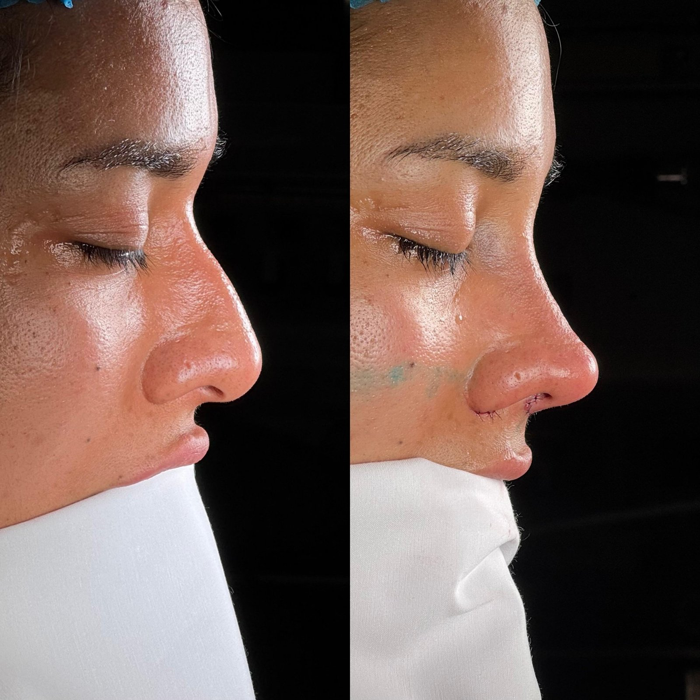
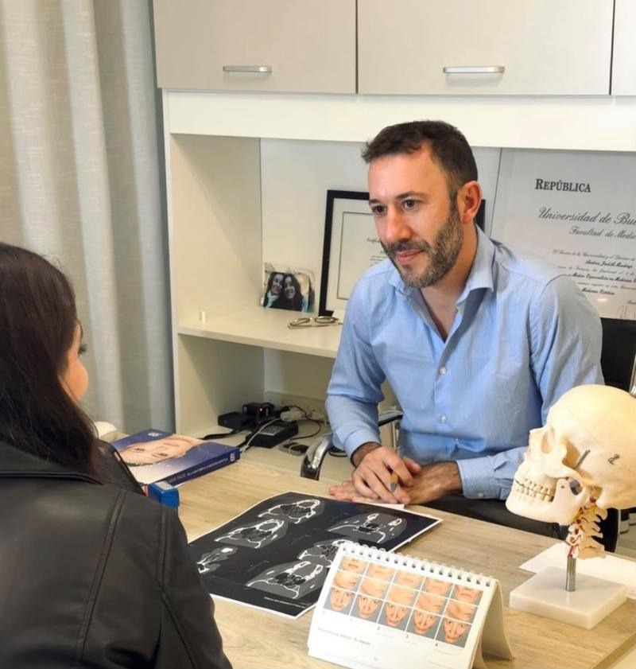
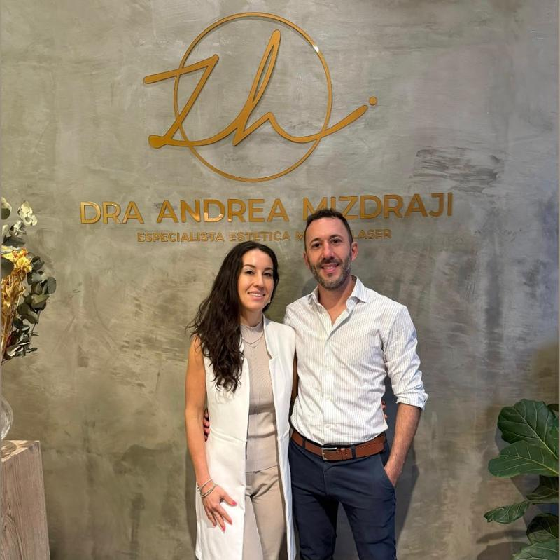

Dr. Guillermo Mizdraji, otorrinolaringólogo. Rinoplastia ultrasónica funcional y estética.
Corregimos tabique y cornetes junto con la estética.
Un perfil armónico con tu rostro.
Precisión al remodelar el hueso nasal.
Estética y función, en una misma cirugía.
Mejora la respiración cuando hay obstrucción nasal. Como otorrinolaringólogo, evalúo la vía aérea completa.
Armonizamos el perfil de la nariz con el resto del rostro, con resultados naturales y proporcionados.
Resultados y momentos de la práctica diaria.






Consultas presenciales en Rosario, con turno previo.


Si vivís en Rosario o alrededores podés realizar tu evaluación sin viajar a Buenos Aires. Escribinos y coordinamos tu turno.
Pedir turno en RosarioTodo lo que pacientes suelen consultar antes y después de una rinoplastia.
Cualquier persona adulta con la nariz ya desarrollada que quiera mejorar su aspecto, su respiración o ambos. En la consulta evaluamos tu anatomía, tus expectativas y tu estado de salud para definir si la cirugía es la mejor opción.
En general, cuando el crecimiento nasal terminó: alrededor de los 16-17 años en mujeres y algo más tarde en varones. Siempre se define en la consulta.
Habitualmente: análisis de laboratorio, electrocardiograma y evaluación prequirúrgica. En casos funcionales puede sumarse una tomografía de senos paranasales o una nasofibroscopía para evaluar tabique y cornetes.
Suspender el cigarrillo, el alcohol y los antiinflamatorios o suplementos que aumentan el sangrado (aspirina, ibuprofeno, vitamina E, entre otros), siempre según las indicaciones del médico. Ir en ayunas el día de la cirugía y avisar por cualquier medicación que tomes.
Sí. Se pueden hacer simulaciones y analizar fotos y medidas de tu rostro para conversar un resultado realista. Es una guía: el resultado final depende de tus tejidos y de la cicatrización.
Es una técnica que utiliza un instrumento de ultrasonido para remodelar el hueso nasal con gran precisión, cuidando los tejidos blandos que lo rodean. Suele asociarse a menos inflamación y moretones, y a una recuperación más cómoda.
La estética busca armonizar la forma de la nariz con el rostro. La funcional corrige problemas que dificultan respirar, como el tabique desviado o los cornetes agrandados. Ambas pueden combinarse en una sola cirugía.
Entre 1,5 y 3 horas según la complejidad, con anestesia general o sedación según el caso. En general el alta es el mismo día o a las 24 horas.
En la técnica cerrada las incisiones están dentro de la nariz y no se ven. En la técnica abierta queda una cicatriz mínima en la base de la nariz que suele ser muy discreta.
Suele ser más molesto que doloroso: sensación de congestión e hinchazón. El dolor se controla bien con la medicación indicada.
Generalmente alrededor de una semana. Protege la nueva estructura de la nariz mientras se consolida.
La mayoría retoma trabajo o estudio entre los 7 y 10 días. El deporte intenso y de contacto se retoma recién a las 4-6 semanas, siempre con autorización del médico.
Dormir con la cabeza elevada y boca arriba, evitar golpes, no sonarse la nariz, no usar anteojos apoyados sobre la nariz durante las primeras semanas, evitar el sol directo y cumplir los controles postoperatorios.
La mayor parte de la hinchazón baja en las primeras semanas, pero el resultado definitivo se aprecia de manera gradual entre los 6 y 12 meses.
Es una cirugía segura cuando la realiza un especialista con experiencia y en un centro habilitado. Como toda cirugía tiene riesgos (sangrado, infección, riesgos de la anestesia) que se conversan en detalle antes de operar.
En un porcentaje bajo de casos puede ser necesario un pequeño ajuste una vez finalizada la cicatrización. Es algo que se conversa de antemano.
Sí, los cambios estructurales son permanentes, aunque la nariz, como el resto del rostro, evoluciona de manera natural con los años.
Información general orientativa. Cada caso es distinto: las indicaciones definitivas se dan en la consulta con el Dr. Mizdraji.
Formación y experiencia.
Opiniones de quienes ya se atendieron.